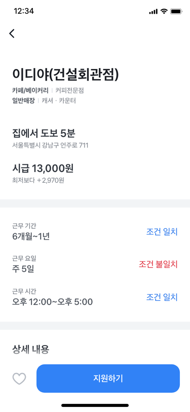
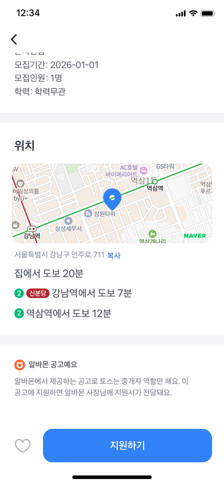
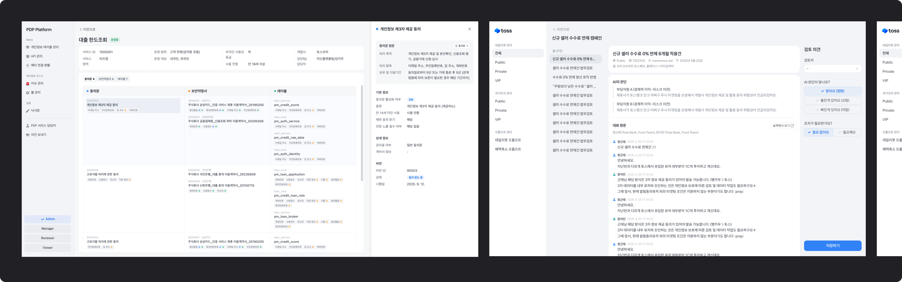

추천알바 강조 실험에서 어떻게
14배의 임팩트를 낼 수 있었을까요?
AS-IS

→
TO-BE

Background
Background
| 1세대 구직 플랫폼 | 토스알바 |
|---|---|
| 광고 기반 잡보드광고성 공고가 너무 많다 30% 추천이 내 상황과 맞지 않는다 30% 이미 마감된 공고가 많다 24% 중복으로 올라오는 공고가 많다 17% |
알바 매칭 서비스광고 없이 내게 맞는 알바를 1분만에 찾는다 |
Background
인트로부터 지원 완료까지 각 퍼널 구간에서 다양한 실험을 진행했어요


Problem
인트로부터 지원완료까지의 퍼널 중, 결과 화면 to 공고 클릭 전환율이 정체된 상태로 오르지 않았어요.
| 측정 구간 | CVR 최대 증가율 |
|---|---|
| 인트로 → 지원서 작성 완료 | +139% |
| 결과 화면 → 공고 상세 | +4% 병목 |
| 공고 상세 → 지원 완료 | +33% |
Problem
Problem


Hypothesis
| 요소 | 가중치 | 설명 |
|---|---|---|
| 거리 적합도 | 40% | 집주소/희망근무지와 매장 간 거리 |
| 경력 적합도 | 10% | 관련 업종 경력 보유 및 기간 |
| 업종 일치도 | 25% | 희망업직종과 공고업직종 매칭 |
| 근무조건 적합도 | 25% | 기간/요일/시간 매칭 |
| 총점 | 100% | 최종 100점 만점 |
User Study
설문조사에서도 미지원에 대한 이유를 '원하는 공고가 없어서'로 뽑았어요.
Constraint
Solution
업종의 가중치를 늘려 업종이 맞는 알바를 잘 보여주면 공고 클릭률이 오를 것이다.
| 측정 구간 | CVR 증가율 |
|---|---|
| 결과 화면 → 공고 상세 | +1.6% |
| 결과 화면 → 지원 완료 | -5.5% |
V1: 필터로 좋은 조건의 공고를 쉽게 비교하게 만들면 공고 클릭률이 오를 것이다.
V2: 업종과 매장명을 강조한다면 공고 클릭률이 오를 것이다.


| 측정 구간 | V1 CVR 증가율 | V2 CVR 증가율 |
|---|---|---|
| 결과 화면 → 공고 상세 | -0.2% | +3.6% (유의미) |
| 결과 화면 → 지원 완료 | -1.3% | -1.3% |
Secondary 영역에 필터를 추가하면 공고 탐색이 용이해져 공고 클릭률이 오를 것이다.


| 측정 구간 | CVR 증가율 |
|---|---|
| 결과 → 상세 | +0.6% |
| 결과 → 지원 | -7.2% |
Result


Problem
스코어링 기반의 추천으로, 5가지 조건 중 3가지만 맞아도 추천하는 구조였어요.

.png)
Hypothesis
Solution
V1: 문구와 아이콘으로 일치 조건 강조
V2: 거리와 업종의 위계를 재설정해 일치 개수가 많아 보이게 변경


V2 지원 완료율
+32.7%
| 측정 구간 | CON | V1 | V2  |
|---|---|---|---|
| 공고 상세→지원 완료 | 5.7% | 6.5% (+14.4%) | 7.5% (+32.7%) |
Result
상세에서 정확한 위치를 알려준다면 지원율이 오를 것이다.



스크롤 높이를 줄여 ATF에 중요한 정보를 보여준다면 지원 클릭률이 오를 것이다.


Problem
AS-IS 화면은 잡보드 UI를 그대로 차용하고 있어, 유저 입장에서는 '어디서나 볼 수 있는 공고'일 뿐이었어요.
공고의 품질을 통제할 수 없다면,
유저가 공고를 바라보는 프레임을 바꿔보기로 했어요.

Hypothesis
Solution
V1: 다른 실험에서 위너로 선정된 '일치 개수를 강조하는 UI'로 추천 심상 강화
V2: V1에서 발전시켜 딱 하나의 공고를 강조하는 UI로 추천 심상 강화

V2 지원 완료율
+53.4%
| 측정 구간 | CON | V1 | V2 |
|---|---|---|---|
| 결과 화면→지원 완료 | 2.4% | 3.0% (+31.2%) | 3.6% (+53.4%) |
| 결과 화면→공고 상세 | 47.3% | 47.2% (-0.07%) | 41.1% (-13.2%) |
| 공고 상세→지원 클릭 | 8.8% | 10.3% (+17%) | 13.4% (+52%) |
Result
처음에 목표했던 공고 클릭률은 떨어졌지만, 지원 완료율은 크게 올랐어요.
추천의 근거를 명확히 할수록, 하나의 공고를 강조할수록 공고 상세에서 지원 의향을 높였어요.
Lesson-Learned
| 가중치 · 리스트 실험 | 추천알바 강조 실험 |
|---|---|
| 어떻게 하면 조건에 맞는 공고를 잘 찾게 할까? ↓ 가중치 조정 / 필터 추가 / 리스트 UI 개선 ↓ 공고 클릭률 +3.6% |
어떻게 하면 공고가 나한테 맞다고 느끼게 할까? ↓ 추천 심상 강화 ↓ 지원 완료율 +53.4% |
Lesson-Learned
출시 초기부터 결과 화면에서 '추천'이 잘 안 느껴진다 생각했어요.
그래서 추천 심상을 강조하는 실험을 제안했어요.
하지만 당시에는 팀원들을 설득하지 못했어요.


Reflection
처음에는 관성적으로 설계했어요. n번의 UT와 리서치를 하며 당연하게 생각하던 것들이
유저들에게는 당연하지 않을 수 있다는 걸 배웠고, 작은 문구도 한번 더 생각하게 됐어요.
.png)
토스에는 유독 왜?라는 질문을 던지는 분들이 많았어요. 처음에는 설득하는 과정이 힘들고 답답했어요.
왜?라는 질문에 답할 수 있게 여러 방면에서 생각하게 되었고, 저의 의도를 더 단단히 잡을 수 있었어요.
지금은 컴플라이언스 팀에서 개인정보 어드민을 만들고 있어요. 유저가 많지 않고 정량적 데이터가 없어
디자이너의 직관이 더욱 중요해요. 다양한 레퍼런스와 시안을 만들어 보며 어떤게 좋은 디자인인지 감각을 기르고 있어요.
